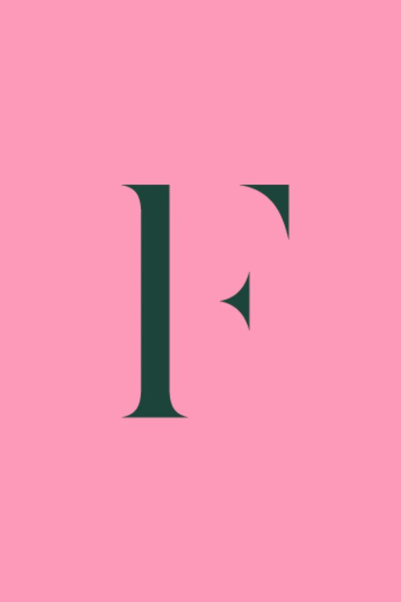
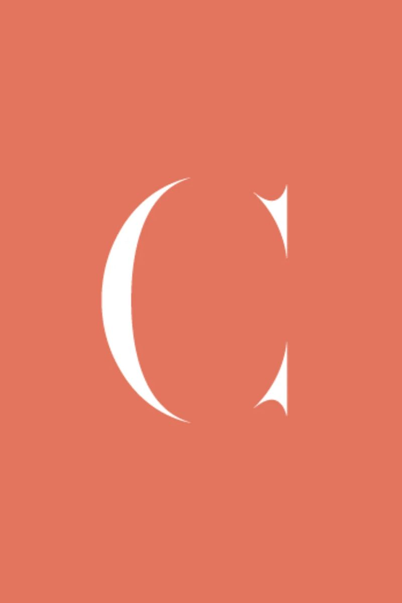
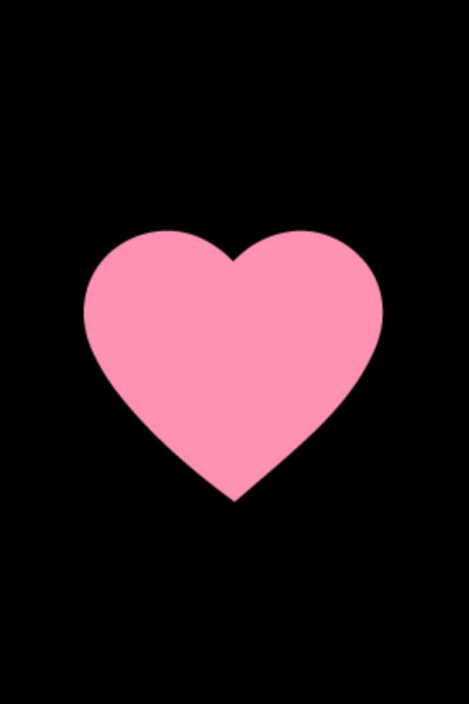
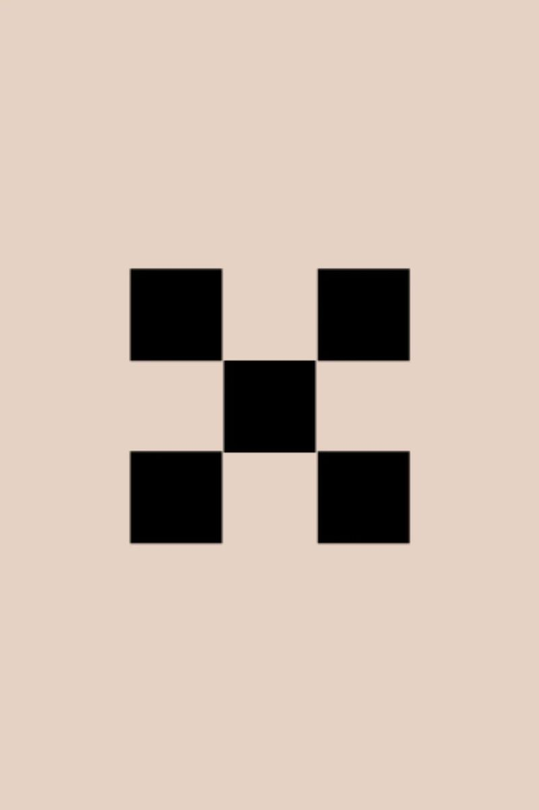

Femme Connection
E-commerce | CRM & Lifecycle Marketing | Loyalty | Integrated Campaigns
Building an integrated customer retention and digital growth programme




Business context
Femme Connection is an Australian online fashion retailer operating in a competitive, fast-moving e-commerce market.
The business needed to maintain customer acquisition while developing stronger relationships with existing customers and encouraging repeat purchases.
Our engagement evolved into an ongoing programme spanning brand development, digital experience, CRM, customer lifecycle marketing, loyalty and campaign delivery.
The work required both strategic planning and consistent execution across multiple marketing and e-commerce platforms.
The challenge
Paid acquisition was an important part of the business, but continued growth also depended on converting and retaining more of the customers already entering the brand's ecosystem.
The opportunity was to improve the relationship between acquisition, website experience, customer communications and repeat purchasing.
This required a more coordinated approach to customer lifecycle activity, automated communications, loyalty, campaign planning and performance reporting.
It also needed an ongoing operating rhythm that allowed the client and studio teams to review results, test improvements and prioritise the next stage of work.
Our approach
Antimony developed and delivered an integrated programme across several connected disciplines.
Brand & digital experience
The engagement included brand identity development and website work, establishing the foundations for a more consistent customer experience.
Ongoing digital optimisation involved reviewing conversion pathways, website usability and opportunities to improve the shopping journey.
CRM & lifecycle marketing
Klaviyo was used to manage customer communications across email and SMS.
The programme included lifecycle flows covering welcome, abandoned cart, checkout, post-purchase and cross-sell opportunities.
The team undertook flow reviews, QA, A/B testing and ongoing refinement to improve the effectiveness of automated and campaign communications.
Loyalty & customer retention
The engagement incorporated Yotpo loyalty strategy, including customer rewards and referral activity.
This work was designed to support repeat purchasing and develop stronger relationships with the existing customer base.
Campaigns & partnerships
The studio supported integrated campaign activity across the retail calendar, alongside influencer, ambassador and affiliate initiatives.
Partnership and campaign work complemented the CRM programme and helped maintain consistency across customer communications.
E-commerce & platform development
The work also involved e-commerce optimisation, integration considerations and scoping for further Shopify development.
This included coordination across marketing, creative, platform and technical workstreams.
Performance reporting & optimisation
Regular reporting, client meetings and reviews connected performance data with practical recommendations.
The programme involved evaluating campaign and flow performance, reviewing channel priorities and identifying opportunities for improvement.
My contribution
I led the senior client relationship and was responsible for coordinating the ongoing programme across the client and studio teams.
I also had direct responsibility for the email and CRM workstream, including campaign planning, lifecycle strategy, creative reviews, flow QA, testing priorities and performance analysis.
I managed the client reporting and review cadence, bringing together results, recommendations and the next priorities for delivery.
Beyond CRM, I coordinated multidisciplinary work across website development, loyalty, content, digital optimisation and partnerships, helping maintain alignment between commercial objectives and day-to-day execution.
My responsibilities also included participating in Shopify migration scoping and loyalty strategy development, working with the relevant client stakeholders and technical specialists.
Services & deliverables
- Brand identity development
- Website and e-commerce experience
- Digital optimisation and CRO
- Customer lifecycle strategy
- Klaviyo email and SMS marketing
- Automated flow development and refinement
- A/B testing and quality assurance
- Yotpo loyalty and referral strategy
- Influencer, ambassador and affiliate programmes
- Integrated retail campaign planning
- Shopify migration scoping
- Marketing performance reporting
- Ongoing senior client and project leadership
Outcome
- $30,000 to $120,000 a month
The engagement developed from individual brand and marketing workstreams into an ongoing programme connecting customer acquisition, retention, loyalty and e-commerce experience.
Email and lifecycle marketing became an increasingly important contributor to the business's revenue, supported by structured testing, regular reporting and continuous refinement. Over the engagement, monthly revenue from the email channel grew from approximately $30,000 to $120,000, and in January 2026 automated flow revenue was 60% higher than a year earlier.
The work established a more coordinated approach to customer communications and provided the client with greater visibility over performance and future priorities.